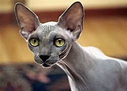

Inicio
DR
S
Sp
Contacto
Sphynx

Peso
Macho: 5 kg. Hembra: 5 kg
Color de ojos
Variado
Pelaje
Longitud: extra corto. Características: casi sin pelo, algunos ejemplares son completamente calvos mientras que otros tienen pelo muy corto (como pelusa de melocotón). Colores: blanco, negro, azul, rojo, crema, plateado, dorado, carey, marrón
Salud y forma de actuar
Esperanza de vida: 8 - 14 años. Necesidades sociales/de atención: altas. Tendencia a mudar el pelo: baja